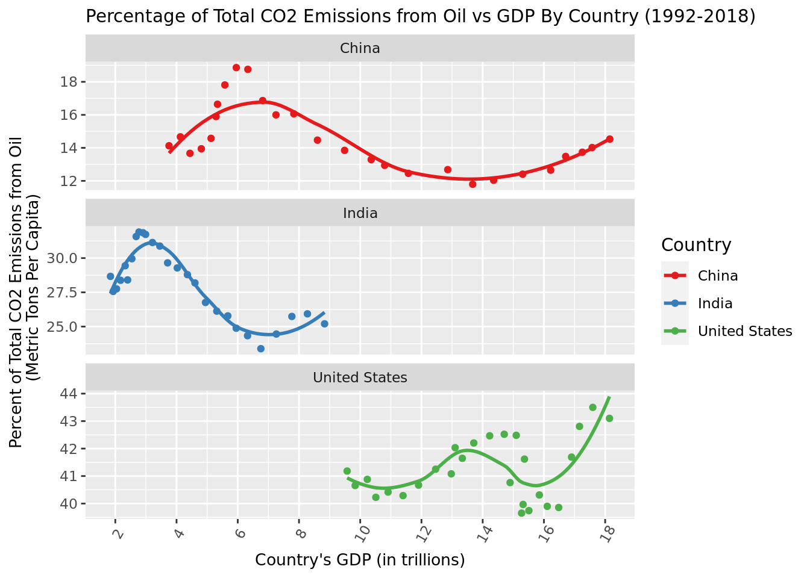

Climate change is one of the most pressing issues facing the world today, and global emissions are a major driver of this phenomenon. As human activities continue to release greenhouse gasses into the atmosphere, the Earth’s temperature is rising at an unprecedented rate. Consequently, a host of negative consequences such as sea level rise, more frequent and severe weather events, and ecosystem disruption have risen. Fossil fuels are undoubtedly the largest contributor to global climate change. In fact fossil fuels, which include coal, oil and gas account for over 75 percent of global greenhouse gas emissions and nearly 90 per cent of all carbon dioxide emissions. Climate change is widely regarded as the biggest issue we will face; its far reaching effects on the environment and human society pose significant challenges for present and future generations. Considering greenhouse gasses, and consequently fossil fuels are the largest contributor to this acceleration, urgent action is required to reduce our reliance on these energy sources. For these reasons, we have decided to surface the unignorable climate change crisis by delving deeper into the issue of global emissions, particularly fossil fuel usage.
The research question being explored is “Which industry between coal, gas, and oil in India, China, and USA creates the most CO2 emission production from 1992 to 2018?” We have chosen to focus on these three countries as they are the top 3 contributors to global emissions. Together, China, the US, and India contribute to nearly half of the global greenhouse gas emissions. In 2019, China contributed 27%, the US contributed 11%, and India contributed 6.6%. The research question will look at these three specified countries and compare over time which industry (coal, gas or oil) in each country releases the most and least CO2 emission and if the industry adding the most CO2 to the atmosphere changes for each country over time. The hypothesis is that because the three countries are in different stages of development, India and China will have coal as the industry causing the most CO2 emission and USA will have oil as the industry emitting the most CO2. In order to evaluate this hypothesis we will also be investigating the relationship between industry emissions rates and Gross Domestic Product (GDP) for each country. GDP is a good measure of country development because it gives information about the size of the economy and how an economy is performing. Thus, we will also be using the variable Country.GDP to further investigate this hypothesis.
To answer our research question we will be utilizing data from the CORGIS data set. The data set was created by Sam Donald, and was created on September 23, 2022. The observations of this data set compare various countries and regions in relation to overall emission trends. The data set also compares what industry such as coal, gas, etc is responsible for these emissions and how much each industry adds to a specific emission type. The variables from this data set that are involved in our research question are “Emissions.Production.CO2.Coal”, “Emissions.Production.CO2.Gas”, and “Emissions.Production.CO2.Oil” All of these variables are quantitative variables. Each row of the data represents a different country with a year between 1992 and 2018 in chronological order. The response variables in this research question are the amount of CO2 emissions measure in metric tons per capita produced by the coal, gas, and oil industries (“Emissions.Production.CO2.Coal”, “Emissions.Production.CO2.Gas”, and “Emissions.Production.CO2.Oil”) in India, China, and the USA from 1992 to 2018. The variable is quantitative and continuous, as it measures the amount of CO2 emissions produced by each industry in each country over a period of time.
To our knowledge, there are not any glaring ethical concerns regarding the collection of this data. Privacy breaches are a potential ethical concern, as research regarding energy and emissions may include sensitive information about individuals. However, our data does not include such metrics. It focuses on countries and industries, opposed to individuals so this is not a concern. It is also important to know that bias in data collection could pose ethical concern. Although, to our knowledge Sam Donald does not have any vested interests or ties to certain organizations or companies that would skew the data.
CO2 is by far one of the most harmful greenhouse gasses emitted that humans have increased. The article cites how “human activity is responsible for adding as much as 110.5 million tons of carbon dioxide daily into the atmosphere” from various industries. The article explains how the top 5 most carbon intensive industries are energy production, agriculture, industry, transport, and residential sector. It also explains how in different parts of the world these industries vary in degree of carbon production. Energy production to power homes, offices, etc from fossil fuels adds greatly to CO2 production. The article discusses the global distribution by sector and how it depends on coal, natural gas, and oil but not how they differ independently
Our research question is different than the article cited because our research question aspires to split up the industries as well as three countries in three different stages of development to then explore which country adds the most or least to CO2 emissions by which industry. Essentially, we seek to explore with more specificity which industries depending on the stage of development of the country add to CO2 emissions instead of only in a global point of view that the article does.
Rows: 2484 Columns: 20
── Column specification ────────────────────────────────────────────────────────
Delimiter: ","
chr (2): Country.Name, Country.Code
dbl (18): Year, Country.GDP, Country.Population, Emissions.Production.CH4, E...
ℹ Use `spec()` to retrieve the full column specification for this data.
ℹ Specify the column types or set `show_col_types = FALSE` to quiet this message.
target_emissions |>ggplot(aes(x = GDP_triliion, y = percent_total_coal, color = Country.Name) ) +geom_point() +geom_smooth(se =FALSE) +facet_wrap(~ Country.Name, ncol =1, scales ="free_y") +labs( title ="Percentage of Total CO2 Emissions from Coal vs GDP By Country (1992-2018)", x ="Country's GDP (in trillions)", y ="Percentage of Total CO2 Emissions from Coal \n (Metric Tons Per Capita)", color ="Country") +theme(plot.title =element_text(size =11), axis.title =element_text(size =10), axis.text.x =element_text(angle =80, vjust =0.75, hjust =0.5)) +scale_color_brewer(palette ="Set1") +scale_x_continuous(breaks =seq(0, 30, by =2), labels =seq(0, 30, by =2))
target_emissions |>ggplot(aes(x = GDP_triliion, y = percent_total_gas, color = Country.Name) ) +geom_point() +geom_smooth(se =FALSE) +facet_wrap(~ Country.Name, ncol =1, scales ="free_y") +labs( title ="Percentage of Total CO2 Emissions from Gas vs GDP By Country (1992-2018)", x ="Country's GDP (in trillions)", y =" Percentage of Total CO2 Emissions from Gas (Metric Tons Per Capita)", color ="Country") +theme(plot.title =element_text(size =11), axis.title =element_text(size =10), axis.text.x =element_text(angle =60, vjust =0.75, hjust =0.5)) +scale_color_brewer(palette ="Set1") +scale_x_continuous(breaks =seq(0, 30, by =2), labels =seq(0, 30, by =2))
target_emissions |>ggplot(aes(x = GDP_triliion, y = percent_total_oil, color = Country.Name) ) +geom_point() +geom_smooth(se =FALSE) +facet_wrap(~ Country.Name, ncol =1, scales ="free_y") +labs( title ="Percentage of Total CO2 Emissions from Oil vs GDP By Country (1992-2018)", x ="Country's GDP (in trillions)", y ="Percent of Total CO2 Emissions from Oil \n (Metric Tons Per Capita)", color ="Country") +theme(plot.title =element_text(size =11), axis.title =element_text(size =10), axis.text.x =element_text(angle =60, vjust =0.75, hjust =0.5)) +scale_color_brewer(palette ="Set1") +scale_x_continuous(breaks =seq(0, 30, by =2), labels =seq(0, 30, by =2))

target_emissions |>ggplot(aes(x = Year, y = Emissions.Production.CO2.Coal,color = Country.Name) ) +labs(x ="Time (In Years)", y ="Emissions Production of Coal",title ="Emissions Production of Coal in Years",color ="Country") +geom_point() +geom_smooth(method ="lm" , se = F) +scale_color_brewer(palette ="Set1")
model_coal <-linear_reg() |>set_engine("lm") |>fit(Emissions.Production.CO2.Coal ~ Year * Country.Name, data = target_emissions)
target_emissions |>ggplot(aes(x = Year, y = Emissions.Production.CO2.Gas,color = Country.Name) ) +labs(x ="Time (In Years)", y ="Emissions Production of Gas",title ="Emissions Production of Gas in Years",color ="Country") +geom_point() +geom_smooth(method ="lm" , se = F) +scale_color_brewer(palette ="Set1")
model_gas <-linear_reg() |>set_engine("lm") |>fit(Emissions.Production.CO2.Gas ~ Year * Country.Name, data = target_emissions)
target_emissions |>ggplot(aes(x = Year, y = Emissions.Production.CO2.Oil,color = Country.Name) ) +labs(x ="Time (In Years)", y ="Emissions Production of Oil",title ="Emissions Production of Oil in Years",color ="Country") +geom_point() +geom_smooth(method ="lm" , se = F) +scale_color_brewer(palette ="Set1")
model_oil <-linear_reg() |>set_engine("lm") |>fit(Emissions.Production.CO2.Oil ~ Year * Country.Name, data = target_emissions)
# A tibble: 3 × 2
Country.Name mean_oil
<chr> <dbl>
1 China 871.
2 India 381.
3 United States 2329.
glance(model_coal)$AIC
[1] 1217.034
glance(model_gas)$AIC
[1] 878.021
glance(model_oil)$AIC
[1] 973.8588
Results
The project explored coal, gas, and oil consumption by three countries - China, India, and the United States. These three countries are at three different points in their development and the data contributes to this point. In the first three graphs, the relationship between country GDP, which is a good measure of country development, and the percent of total CO2 production in different industries over time is displayed. We are using these graphs to explore trends overtime, rather than quantifying the percentage of emissions in each country. The graph that displays information about the coal industry shows that at a certain GDP, it appears that reliance on coal decreases in that country. According to the above graph, this occurs when the GDP reaches about $12 trillion. As seen in both China and in the US, after the countries hit about $12 trillion in GDP, their percentage CO2 emissions from coal decreases. Meanwhile, India has not reached this development as of yet. Thus, there is still a relatively positive trend in the coal emissions in India. This data supports our hypothesis that differences in development are related to the source of CO2 emissions.
The second graph, which displays information about the gas industry, shows that at a certain GDP, it appears that reliance on gas increases in that country. According to the above graph, the total CO2 emissions from gas has been continually increasing in China as the GDP has increased. In the US, the total CO2 emissions from gas has rapidly increased after the country reached $15 trillion in GDP. Meanwhile, India has not reached a point in its development where there is a positive trend in the use of the total CO2 emissions from gas. This data supports our hypothesis that differences in development are related to the source of CO2 emissions, especially when it comes to converting to newer, more renewable ways to produce energy (such as in the gas industry).
The third graph, which displays information about the oil industry, does not display conclusive trends from country to country. Thus, the relationship between emissions and development is not a factor here.
Now we take a deeper look into how each specific industry has evolved within each country of interest. For coal, China has the greatest consumption by a significant amount and this value continues to grow in recent time with over 6000 metric tons per capita. In the past, the United States has had more consumption than India but in recent years, they have flipped in consumption level. Now, the United States has reduced its consumption of coal and is slightly under India’s consumption at around 1000 metric tons per capita.
For gas, the United States has the greatest consumption at over 2000 metric tons per capita. The United States was steady until 2010 and has in recent years continued to rise. The next greatest consumption of gas is China which is consistently growing over time and is currently around 500 metric tons per capita. India’s consumption grew until 2010 and is slightly decreasing in recent years. India’s consumption is around 125 metric tons per capita.
For oil, the United States has the greatest consumption but had a slight decline around 2005 but this level has again continued to rise after the decline. The United State’s consumption is around 2500 metric tons per capita. China is the next highest at around 1500 metric tons per capita and India’s consumption is around 600 metric tons per capita.
The mean coal consumption for coal in China, India, and the United States respectively are 4651, 872, and 1923 metric tons per capita. The mean gas consumption for coal in China, India, and the United States respectively are 164, 71, and 1285 metric tons per capita. The mean oil consumption for coal in China, India, and the United States respectively are 871, 380, and 2328 metric tons per capita.
By conducting a linear regression model on the data, we were able to make predictions about each country’s consumption of coal, gas, and oil in the year 2050. For coal by 2050, we predict that the United States will consume 956 metric tons per capita, while India consumes 3079 metric tons per capita, and China consumes 16,214 metric tons per capita. For gas by 2050, we predict that the United States will consume 1967 metric tons per capita, while India consumes 265 metric tons per capita, and China will consume 934 metric tons per capita. For oil by 2050, we predict that the United States will consume 2297 metric tons per capita, while India consumes 1144 metric tons per capita, and China consumes 2772 metric tons per capita. Based on the AIC values, country and year are the best predictors of gas emissions among the three types of industries.
In general, India and China are growing the fastest in consumption for coal which supports our hypothesis. By 2050, these two countries would be consuming over 19000 metric tons per capita in coal with China contributing over 85%. For gas, the United States will remain a majority consumer but India and China will grow more dramatically by consuming over 1100 metric tons per capita. For oil, India and China will consume over 3900 metric tons per capita. China consumes more than India in all three forms and over consumes the United States in all by gas. The United States over consumes India in all but coal. Essentially for coal, in order of greatest to least consumption, the country order is China, India, and the United States. For gas, in order of greatest to least consumption, the country order is United States, China, and India. For oil, in order of greatest to least consumption, the country order is China, United States, India. We suggest that since the United States is at a greater stage of development, they should start using more alternative energy forms and renewable forms of energy. The slight steadiness in the trend lines of the United States support this idea along with the subtle declines present in coal and oil.
Limitations of the model that affect the validity is that other countries with fast-growing populations such as countries in Africa as well as countries with rapid economic development currently such as Brazil were not taken into account when exploring the project overall. It is likely that these countries are starting and are contributing heavily to the amount of CO2 emissions from oil, coal, and gas. Overall, India, China, and the United States contribute to 50% so these countries likely contribute to the other half and maybe more by 2050 and we did not account for that in the linear regression model and predictions.
Conclusion:
The global energy system currently relies on fossil fuels. This has led to a significant increase in greenhouse gas emissions, which is the primary cause of climate change. To address the unignorable crisis, there is an urgent need to transition to renewable energy sources.
A key finding of this project is that countries with greater GDP have more resources to invest in renewable energy sources. This means that they have a better chance of transitioning to a greener energy system in the future. However, this does not mean that developing countries are entirely left out of this transition. It is essential to focus on helping these countries grow in a sustainable way without relying on fossil fuels. Currently developing countries, like India, are relying on cheaper, yet harmful, coal energy to support their rapid development. This detrimental cycle of relying on fossil fuels to develop must be stopped. This can be achieved through international cooperation, investment in renewable energy infrastructure, and technology transfer. Another important finding of this project is that the progress is being made, as developed countries are moving away from coal energy. This is encouraging news and highlights the potential for other developed countries to follow suit. Although, there is still much work to be done in this area, and future research can build on the findings of this project to further advance sustainable energy solutions. Ultimately, the success of this transition to green energy will depend on a collaborative effort from governments, businesses, and individuals to create a cleaner, more sustainable future for generations to come. As mentioned, developing countries often face unique challenges in transitioning to renewable energy sources. Further research is needed to identify the most effective strategies for promoting renewable energy development in these countries, such as technology transfer, capacity building, and financial support. Additionally, more research is needed to identify the most effective policies and technologies to achieve this goal of a sustainable future.
The transition to renewable energy sources is essential to stop the current trends and ensure a sustainable future. It will require collaboration, investment, and public support to achieve this goal, but the benefits could save our planet and our future. With continued efforts and investments in sustainable energy solutions, we are optimistic that there is a cleaner and brighter future for generations to come.